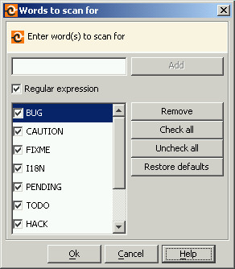

In the Words Scanned dialog box you can configure the rules that the Fixme Scanner uses to detect FIXMEs. This dialog box is displayed every time you run the FIXME Scanner and if the dialog box is not open, click the Words button () on the left side of the output window. The following figure shows the Words Scanned dialog box:

You can use the checkboxes on the left to choose which words are included in the current search and the words (or rules in general) are run against every line in a comment to see if there is at least one match. There are two kinds of rules in the list: regular expressions and line prefixes where Regular expression is the default type.
For example, the following regular expression locates all comments that contain "FIXME" and "John" (in that order):
FIXME.*John.
API documentation of Java Regex - more information about regular expressions